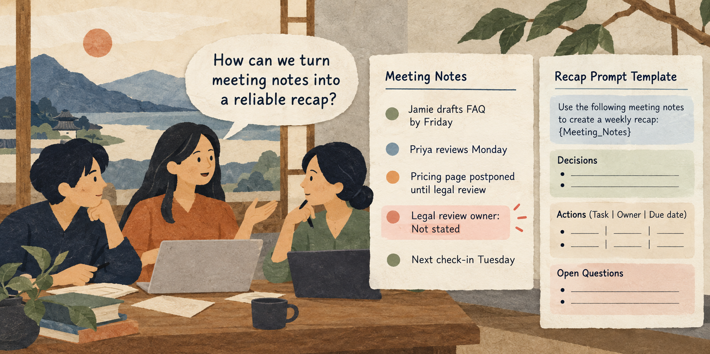

Situation
The problem
A team rewrites the same weekly meeting recap from scratch, so important decisions and action owners are easy to miss.

3 hours: 50-minute lesson, 10-minute break, 50-minute guided practice, 10-minute break, 50-minute applied practice, and 10-minute wrap-up.
A team rewrites the same weekly meeting recap from scratch, so important decisions and action owners are easy to miss.
Build a reusable prompt with clear input fields and a consistent output format.
Practice material: Use the practice material supplied in the session Markdown.
Do not replace missing information with guesses.
A team rewrites the same weekly meeting recap from scratch, so important decisions and action owners are easy to miss.
Work through the explanation before comparing prompts or starting the exercise.
Work through the explanation before comparing prompts or starting the exercise.
These examples come from the current session scenario.
Summarize this.
Make a complete action plan and assign owners.
Keep the source, task, constraints, and output check visible.
From {Meeting_Notes}, list decisions, actions, named owners, and dates.
If a field is absent, write "Not stated." Do not infer an owner or deadline.Format the result as: Decisions; Action | Owner | Due date; Open questions. Keep names and dates exactly as stated. End with one item needing confirmation.
Use the complete case and instructions from the session Markdown.
Use the complete case and instructions from the session Markdown.
Check the output before sharing or acting on it.